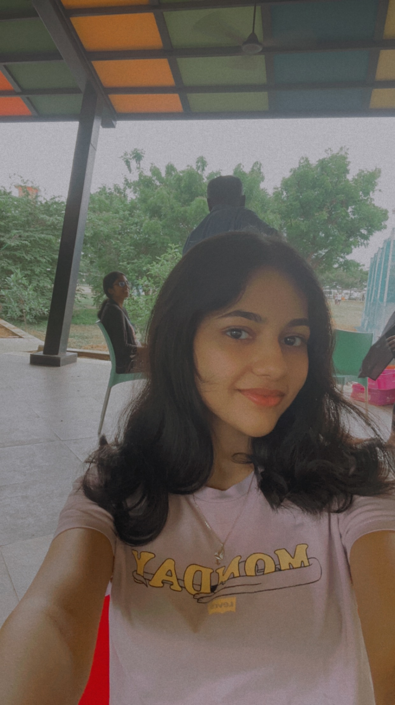

Resume
Name: Shaina
Profession: Full time Student

Summary
As a Computer Science student at Vellore Institute of Technology (VIT), I am passionate about learning new technologies and applying them to real-world problems. I have a strong academic background that covers a wide range of topics, such as data structures, algorithms, programming languages, databases, and artificial intelligence.
Besides my studies, I am actively involved in several tech-related clubs and events, where I collaborate with other enthusiasts and professionals to enhance my skills and knowledge. I am currently leading the Management Team at Linux Club VIT, where I oversee the planning, execution, and evaluation of various workshops, webinars, and competitions. I am also a member of the Operations Team at Enactus VIT Chennai, where I use LinkedIn Talent Insights to identify and connect with potential partners, sponsors, and mentors for our social entrepreneurship projects.
Through these experiences, I have developed strong communication, analytical, and leadership skills, as well as a keen interest in exploring the intersections of technology, business, and society. I am always eager to take on new challenges and push my boundaries, seeking ways to expand my skill set and stay at the forefront of technology.
As I progress in my academic journey, I am open to internships, research opportunities, and industry collaborations that can provide real-world exposure and enrich my understanding of the tech industry. I welcome connections with professionals, mentors, and organizations to exchange ideas and insights, fostering a network of continuous learning and growth. Let's connect and embark on this journey of discovery together.
Education
-
Vellore Institute of Technology, Chennai
Bachelor of Technology - BTech, Computer Science
Sep 2022 - Sep 2026
-
GT Aloha Vidhya Mandir
High School Diploma
Jun 2020 - Jul 2022
-
Primrose Schools Chennai
Primary and High School
Feb 2007 - Jul 2020
Skills
-
Programming Languages:
C, C++, Python, Java
-
Tech Stack:
Web Development, UI/UX Design
Experience
-
Enactus VIT Chennai
Operations Team Member
Apr 2023 - Present · 6 mos
-
Linux Club VIT, Chennai
Management Team lead
Jul 2023 - Present · 3 mos
Management Team Member
Apr 2023 - Jul 2023 · 4 mos
Contact Me
LinkedIn
GitHub